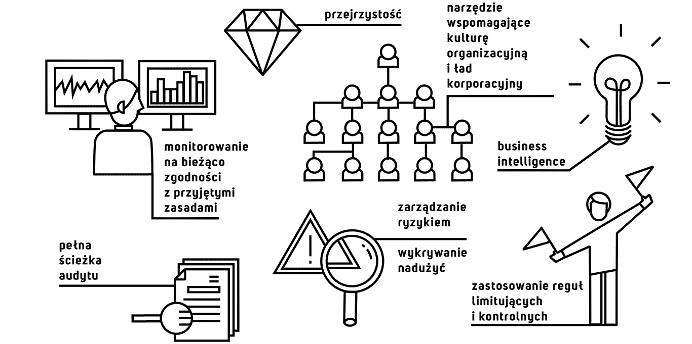

Według badań PWC przeprowadzonych w 2016 roku, 75% firm polskich firm posiadających zorganizowaną funkcję compliance, przeprowadza wewnętrzne audyty zgodności jedynie tradycyjnymi - „ręcznymi” - metodami. Nie dziwi więc niski wskaźnik wykrywalności nadużyć (zaledwie 40%) i fakt, że aż 36% firm dotykają sprzeniewierzenia pracownicze. Jednym ze wskazanych sposobów na ograniczenie nadużyć są narzędzia biznesowe wspomagające kulturę organizacyjną, przejrzystość relacji i operacji. Zbudowany przez nas system zapewnia monitorowanie przestrzegania obowiązujących zasad. Rozwiązanie wyposażone jest zarówno w funkcjonalności o charakterze prewencyjnym jak i detekcyjnym, do których należą m.in.:
